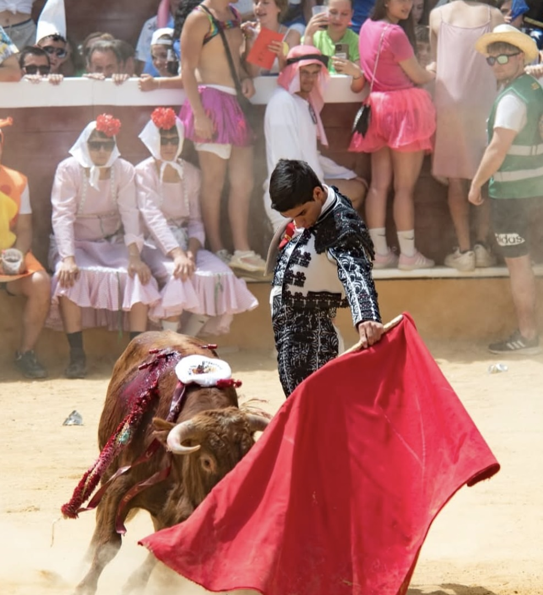

La Peña Taurina El Pacharán de las 6 concedió a Israel Aparicio el IX Premio Promesa Sanjuanera, un reconocimiento que distingue al novillero más destacado del tradicional «Viernes de Toros» de las fiestas de San Juan de Soria. El galardón fue acordado por unanimidad por la directiva de la peña tras valorar las actuaciones celebradas durante la jornada taurina.
El jurado destacó la actuación del novillero ciudadrealeño, que logró pasear tres orejas tras la lidia de los novillos de Bella Lucía y Juan José Cano. Su entrega, la seriedad mostrada durante toda la mañana y la capacidad para conectar con el público fueron algunos de los aspectos más valorados para la concesión del premio.
La peña consideró que su actuación reflejó el potencial y la proyección de un torero con un futuro prometedor, razones por las que decidió reconocer su labor con este prestigioso galardón, que anteriormente han recibido otros novilleros que posteriormente dieron el salto a importantes compromisos dentro del panorama taurino.
Este reconocimiento supone un nuevo impulso para la trayectoria de Israel Aparicio y pone en valor el trabajo desarrollado durante la temporada, consolidando su progresión como uno de los jóvenes novilleros con mayor proyección.
← Volver a noticias